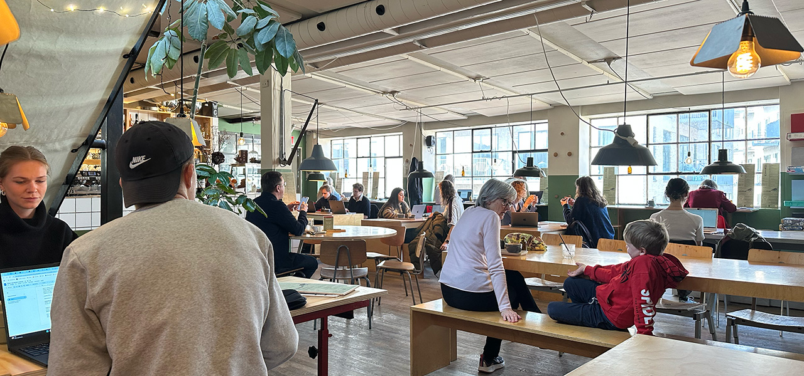
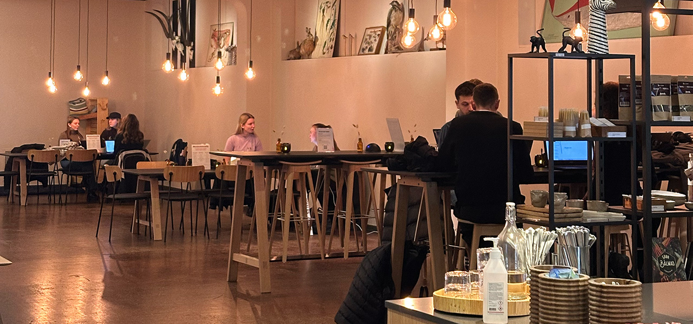
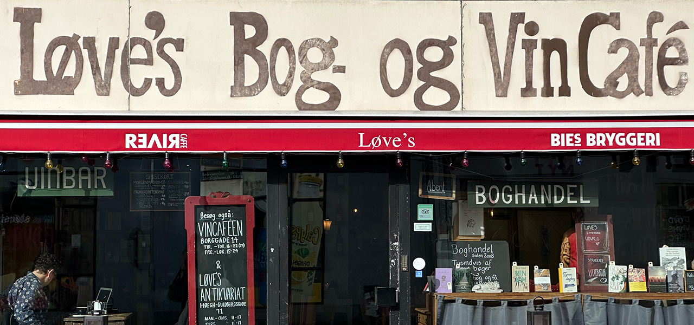
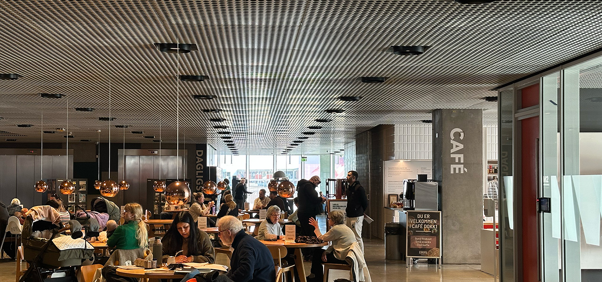
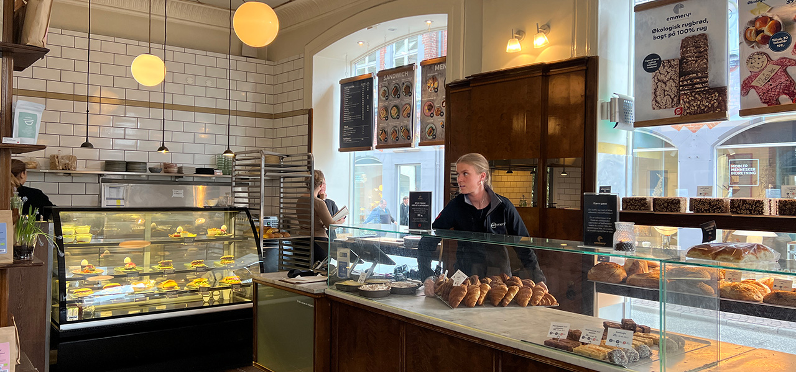
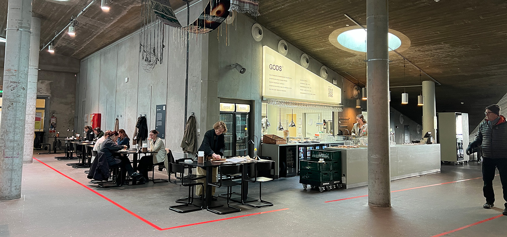

LYNfabrikken: godt studiemiljø & åben tagterrasse
I en hyggelig baggård i Vestergade finder du LYNfabrikken – en af Aarhus’ mest populære studiecaféer. Udover fantastisk kaffe byder caféen på et inspirerende miljø med mødelokaler og arbejdsrum. Tag plads ved langbordene, eller nyd din studiepause på den skønne tagterrasse med udsigt over byen. Kom i god tid – pladserne ryger hurtigt!
Adresse: Vestergade 49, B, 8000 Aarhus Centrum
Åbningstid: Alle dage 08:00 til 22:00
Læs mere her
Naturhistorisk museum: roligt studiemiljø & studierabat
Caféen på Naturhistorisk Museum er ideel til både solo-læsning og gruppearbejde. Her får du en rolig atmosfære, behagelige omgivelser og en 20 % studierabat på kaffe. Caféen er åben for alle – du behøver ikke billet til museet for at besøge den!
Adresse: Wilhelm Meyers Allé 10, 8000 Aarhus C (midt i Uniparken)
Åbningstid: Alle dage kl. 10:00 til 16:00
Læs mere her
Løves bog- og vincafé: bøger, hygge & god mad
Elsker du studielæsning omgivet af bogreoler og duften af kaffe? Hos Løve’s kan du fordybe dig i lektierne, nyde et godt måltid eller deltage i kulturelle arrangementer. Perfekt til dig, der vil kombinere studie med en hyggelig atmosfære.
Adresse: Nørregade 32, 8000 Aarhus C
Åbningstid: Mandag-Onsdag kl. 10:00 til 23:00
Torsdag-Fredag kl. 09:00 til 00:00
Lørdag kl. 10:00 til 00:00
Søndag kl. 10:00 til 18:00
Læs mere her
Dokk1: mange studiepladser & fantastisk udsigt
Dokk1 er et af de bedste steder i Aarhus til eksamenslæsning. Her finder du studiepladser, mødelokaler og en afslappende café. Med udsigt over Aarhus Havn kan du både fordybe dig i bøgerne og nyde en velfortjent pause.
Adresse: Hack Kampmanns Plads 2, 8000 Aarhus Centrum
Åbningstid: Mandag-fredag kl. 09.30 til 19.00
Lørdag-søndag kl. 10:00 til 15:00
Læs mere her
Emmerys: hyggelige caféer & økologiske lækkerier
Hvis du søger et roligt sted med lækker kaffe og bagværk, er Emmerys det perfekte valg. Med flere beliggenheder i Aarhus er du aldrig langt fra et studievenligt spot.
Adresse: 5 forskellige beligggenheder i Århus: Se her
Åbningstid: Varierer efter beliggenhed
Læs mere her
GODS: hyggelig atmosfære & kvalitetskaffe
GODS er et fantastisk sted til både studiearbejde og afslapning. Med kvalitetskaffe, et inspirerende miljø og en uformel stemning er det oplagt for både gruppearbejde og solo-sessioner.
Adresse: Skovgaardsgade 3, 8000 Aarhus C - indgang 3A eller 3H
Åbningstid: Hverdage kl. 09:00 til 21:00
Lørdag kl. 10:00 til 21:00
Søndag kl. 10:00 til 18:00
Læs mere her